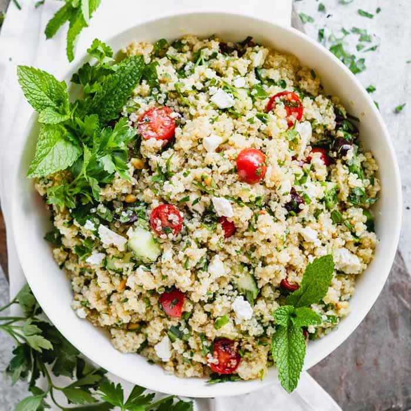

Welcome to the Food Intake Tracker
This site allows you to track your daily food intake and receive feedback on the vitamins and nutrients you are consuming.
Use the navigation bar above to access the different pages of the site.
Benefits of Using This Tracker
- Keep track of your nutritional intake
- Identify potential nutrient deficiencies
- Plan healthy meals based on your needs
- Monitor your progress towards your health goals
Featured Recipe
Try this delicious and nutritious recipe:
|  |
Quinoa Salad
|